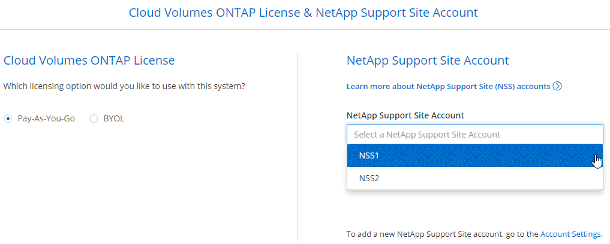
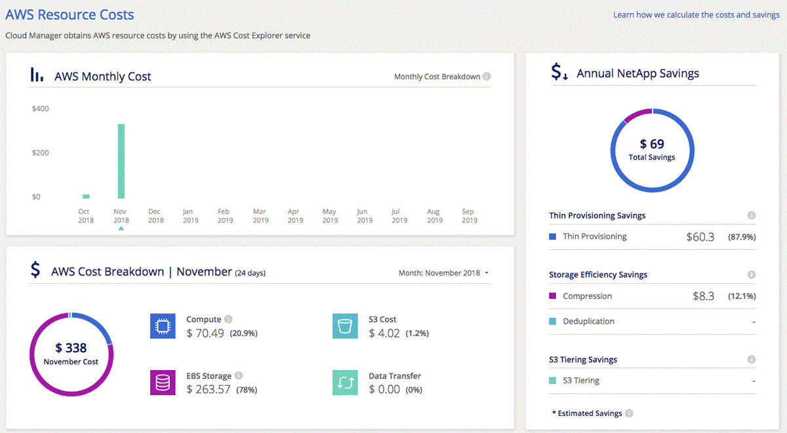

Cloud Manager 3.6의 새로운 기능
기여자
OnCommand Cloud Manager에는 일반적으로 새로운 기능, 향상 기능 및 버그 수정을 제공하기 위해 매월 새로운 릴리즈가 도입되었습니다.

|
이전 릴리스를 찾으십니까?"3.5의 새로운 기능" |
AWS C2S 환경 지원(2019년 5월 2일)
Cloud Volumes ONTAP 9.5 및 Cloud Manager 3.6.4는 현재 미국에서 사용할 수 있습니다 C2S(AWS Commercial Cloud Services) 환경을 통한 IC(Intelligence Community) C2S에 HA 쌍 및 단일 노드 시스템을 구축할 수 있습니다.
Cloud Manager 3.6.6(2019년 5월 1일)
AWS에서 6TB 디스크 지원
이제 Cloud Volumes ONTAP for AWS로 EBS 디스크 크기를 6TB로 선택할 수 있습니다. 최근 을 클릭합니다 "범용 SSD의 향상된 성능"이제 최대 성능을 위해 6TB 디스크가 가장 적합합니다.
이 변경 사항은 Cloud Volumes ONTAP 9.5, 9.4 및 9.3에서 지원됩니다.
Azure에서 단일 노드 시스템으로 새로운 디스크 크기 지원
이제 Azure의 단일 노드 시스템에서 8TB, 16TB 및 32TB 디스크를 사용할 수 있습니다. 디스크 크기가 커지면 Premium 또는 BYOL 라이센스를 사용할 때 디스크만으로 최대 368TB의 시스템 용량을 달성할 수 있습니다.
이 변경 사항은 Cloud Volumes ONTAP 9.5, 9.4 및 9.3에서 지원됩니다.
Azure에서 단일 노드 시스템으로 표준 SSD 지원
표준 SSD 관리 디스크는 이제 Azure의 단일 노드 시스템에서 지원됩니다. 이러한 디스크는 프리미엄 SSD와 표준 HDD 간에 높은 수준의 성능을 제공합니다.
이 변경 사항은 Cloud Volumes ONTAP 9.5, 9.4 및 9.3에서 지원됩니다.
NetApp Kubernetes Service를 통해 생성된 Kubernetes 클러스터의 자동 검색
Cloud Manager는 이제 NetApp Kubernetes Service를 사용하여 구축하는 Kubernetes 클러스터를 자동으로 검색할 수 있습니다. 이를 통해 Kubernetes 클러스터를 Cloud Volumes ONTAP 시스템에 연결하여 컨테이너에 영구 스토리지로 사용할 수 있습니다.
다음 이미지는 자동으로 검색된 Kubernetes 클러스터를 보여줍니다. "NKS로 이동" 링크를 통해 NetApp Kubernetes Service에 직접 연락할 수 있습니다.

NTP 서버를 구성하는 기능입니다
이제 NTP(네트워크 시간 프로토콜) 서버를 사용하도록 Cloud Volumes ONTAP를 구성할 수 있습니다. NTP 서버를 지정하면 네트워크 시스템 간의 시간이 동기화되어 시간 차이로 인한 문제를 방지할 수 있습니다.
CIFS 서버를 설정할 때 Cloud Manager API를 사용하거나 사용자 인터페이스에서 NTP 서버를 지정합니다.
-
를 클릭합니다 "Cloud Manager API" NTP 서버의 주소를 지정할 수 있습니다. 다음은 AWS의 단일 노드 시스템용 API입니다.

-
CIFS 서버를 구성할 때 Cloud Manager 사용자 인터페이스를 통해 Active Directory 도메인을 사용하는 NTP 서버를 지정할 수 있습니다. 다른 주소를 사용해야 하는 경우 API를 사용해야 합니다.
다음 이미지는 CIFS 설정 시 사용할 수 있는 NTP 서버 필드를 보여 줍니다.

Cloud Manager 3.6.5(2019년 4월 2일)
Cloud Manager 3.6.5에는 다음과 같은 향상된 기능이 포함되어 있습니다.
Kubernetes의 향상된 기능
컨테이너용 영구 스토리지로 Cloud Volumes ONTAP를 더 쉽게 사용할 수 있도록 몇 가지 기능이 향상되었습니다.
-
이제 여러 Kubernetes 클러스터를 Cloud Manager에 추가할 수 있습니다.
따라서 여러 클러스터를 서로 다른 Cloud Volumes ONTAP 시스템에 연결하고 여러 클러스터를 동일한 Cloud Volumes ONTAP 시스템에 연결할 수 있습니다.
-
클러스터를 연결하면 이제 Cloud Volumes ONTAP를 Kubernetes 클러스터의 기본 스토리지 클래스로 설정할 수 있습니다.
사용자가 영구 볼륨을 생성할 때 Kubernetes 클러스터는 기본적으로 Cloud Volumes ONTAP를 백엔드 스토리지로 사용할 수 있습니다.

-
Cloud Manager에서 Kubernetes 스토리지 클래스를 더 쉽게 식별할 수 있도록 이름 지정하는 방법을 변경했습니다.
-
* NetApp-파일 *: 단일 노드 Cloud Volumes ONTAP 시스템에 영구 볼륨을 바인딩하는 데 사용됩니다
-
* NetApp-파일-중복 *: 영구 볼륨을 Cloud Volumes ONTAP HA 쌍에 바인딩하는 데 사용됩니다
-
-
Cloud Manager가 설치한 NetApp Trident의 버전이 최신 버전으로 업데이트되었습니다.
NetApp Support 사이트 계정은 이제 시스템 수준에서 관리됩니다
이제 Cloud Manager에서 NetApp Support 사이트 계정을 더 쉽게 관리할 수 있습니다.
이전 릴리스에서는 NetApp Support 사이트 계정을 특정 테넌트에 연결해야 했습니다. 이제 클라우드 공급자 계정을 관리하는 것과 동일한 위치에서 Cloud Manager 시스템 수준에서 계정이 관리됩니다. 이러한 변경 사항을 통해 Cloud Volumes ONTAP 시스템을 등록할 때 여러 NetApp Support 사이트 계정 중에서 원하는 계정을 유연하게 선택할 수 있습니다.

새로운 작업 환경을 생성하는 경우 NetApp Support 사이트 계정을 선택하여 Cloud Volumes ONTAP 시스템을 다음 사이트에 등록하기만 하면 됩니다.

Cloud Manager를 3.6.5로 업데이트하면, 이전에 테넌트를 계정에 연결했던 경우 NetApp Support 사이트 계정이 자동으로 추가됩니다.
AWS 전송 게이트웨이는 부동 IP 주소에 액세스할 수 있습니다
여러 AWS Availability Zone의 HA 쌍에서는 NAS 데이터 액세스 및 관리 인터페이스에 _floating IP address_를 사용합니다. 지금까지는 HA 쌍이 상주하는 VPC 외부에서 해당 부동 IP 주소에 액세스할 수 없었습니다.
을(를) 사용할 수 있는지 확인했습니다 "AWS 전송 게이트웨이" VPC 외부에서 부동 IP 주소에 액세스할 수 있도록 합니다. 즉, VPC 외부에 있는 NetApp 관리 툴 및 NAS 클라이언트가 유동 IP에 액세스하고 자동 페일오버를 활용할 수 있습니다.
Azure 리소스 그룹이 잠겼습니다
이제 Cloud Manager에서 Azure 리소스 그룹을 생성할 때 Cloud Volumes ONTAP 리소스 그룹을 잠급니다. 리소스 그룹을 잠그면 사용자가 실수로 중요한 리소스를 삭제하거나 수정할 수 없습니다.
이제 NFS 4 및 NFS 4.1이 기본적으로 사용하도록 설정됩니다
이제 Cloud Manager에서 제공하는 새로운 모든 Cloud Volumes ONTAP 시스템에서 NFS 4 및 NFS 4.1 프로토콜을 사용할 수 있습니다. 이 변경 사항은 더 이상 수동으로 프로토콜을 활성화할 필요가 없기 때문에 시간을 절약할 수 있습니다.
새로운 API를 사용하여 ONTAP 스냅샷 복사본을 삭제할 수 있습니다
이제 Cloud Manager API 호출을 사용하여 읽기-쓰기 볼륨의 스냅샷 복사본을 삭제할 수 있습니다.
다음은 AWS의 HA 시스템에 대한 API 호출의 예입니다.

AWS의 단일 노드 시스템과 Azure의 단일 노드 및 HA 시스템에 유사한 API 호출을 사용할 수 있습니다.
Cloud Manager 3.6.4 업데이트(2019년 3월 18일)
Cloud Volumes ONTAP용 9.5 P1 패치 릴리스를 지원하도록 Cloud Manager가 업데이트되었습니다. 이 패치 릴리즈를 사용하면 Azure의 HA 쌍이 이제 GA(GA)로 제공됩니다.
를 참조하십시오 "Cloud Volumes ONTAP 9.5 릴리스 정보" HA 쌍에 대한 Azure 지역 지원에 대한 중요한 정보를 포함하여 자세한 내용은 을 참조하십시오.
Cloud Manager 3.6.4(2019년 3월 3일)
Cloud Manager 3.6.4에는 다음과 같은 개선 사항이 포함되어 있습니다.
다른 계정의 키로 AWS 관리 암호화
AWS에서 Cloud Volumes ONTAP 시스템을 시작하면 이제 를 사용하도록 설정할 수 있습니다 "AWS로 관리하는 이기종 암호화" 다른 AWS 사용자 계정의 CMK(Customer Master Key) 사용
다음 이미지는 새 작업 환경을 만들 때 옵션을 선택하는 방법을 보여줍니다.

오류가 발생한 디스크 복구
Cloud Manager는 이제 Cloud Volumes ONTAP 시스템에서 장애가 발생한 디스크를 복구하려고 시도합니다. 성공한 시도는 이메일 알림 보고서에 기록됩니다. 다음은 샘플 알림입니다.

|
|
사용자 계정을 편집하여 알림 보고서를 활성화할 수 있습니다. |
Blob 컨테이너에 데이터를 계층화할 때 HTTPS에 대해 Azure 스토리지 계정이 활성화됩니다
비활성 데이터를 Azure Blob 컨테이너에 계층화하도록 Cloud Volumes ONTAP 시스템을 설정하면 Cloud Manager에서 해당 컨테이너에 대한 Azure 저장소 계정을 만듭니다. 이 릴리스부터 Cloud Manager는 이제 보안 전송(HTTPS)을 통해 새 저장소 계정을 활성화합니다. 기존 스토리지 계정은 계속해서 HTTP를 사용합니다.
Cloud Manager 3.6.3(2019년 2월 4일)
Cloud Manager 3.6.3에는 다음과 같은 개선 사항이 포함되어 있습니다.
Cloud Volumes ONTAP 9.5 GA에 대한 지원
Cloud Manager는 이제 Cloud Volumes ONTAP 9.5의 GA(General Availability) 릴리즈를 지원합니다. 여기에는 AWS의 M5 및 R5 인스턴스에 대한 지원이 포함됩니다. 9.5 릴리스에 대한 자세한 내용은 를 참조하십시오 "Cloud Volumes ONTAP 9.5 릴리스 정보".
모든 프리미엄 및 BYOL 구성에 368TB 용량 제한
Cloud Volumes ONTAP Premium 및 BYOL의 시스템 용량 제한은 이제 모든 구성(AWS 및 Azure의 단일 노드 및 HA)에서 368TB입니다. 이 변경 사항은 Cloud Volumes ONTAP 9.5, 9.4 및 9.3(9.3을 포함한 AWS에만 해당)에 적용됩니다.
일부 구성에서는 디스크 제한만으로 368TB의 용량 제한에 도달하지 못합니다. 이 경우 의 용량 제한에 도달할 수 있습니다 "비활성 데이터를 오브젝트 스토리지로 계층화". 예를 들어, Azure의 단일 노드 시스템은 252TB의 디스크 기반 용량을 가질 수 있으며 Azure Blob 스토리지에서 최대 116TB의 비활성 데이터를 허용합니다.
디스크 제한에 대한 자세한 내용은 의 스토리지 제한을 참조하십시오 "Cloud Volumes ONTAP 릴리즈 노트".
새로운 AWS 지역 지원
Cloud Manager 및 Cloud Volumes ONTAP는 현재 다음 AWS 지역에서 지원됩니다.
-
유럽(스톡홀름)
단일 노드 시스템만 해당합니다. 현재 HA 쌍은 지원되지 않습니다.
-
GovCloud(미국 - 동부)
또한, AWS GovCloud(미국-서부) 지역을 지원할 수 있습니다.
S3 지능형 계층화 지원
AWS에서 데이터 계층화를 활성화하면 Cloud Volumes ONTAP은 기본적으로 비활성 데이터를 S3 표준 스토리지 클래스로 계층화합니다. 이제 계층화 레벨을 _Intelligent Tiering_storage 클래스로 변경할 수 있습니다. 이 스토리지 클래스는 데이터 액세스 패턴이 변경될 때 두 계층 간에 데이터를 이동하여 스토리지 비용을 최적화합니다. 한 계층은 잦은 액세스를 위한 반면 다른 계층은 낮은 액세스 빈도로 사용됩니다.
이전 릴리즈에서와 마찬가지로 Standard - Infrequent Access 계층과 One Zone - Infrequent Access 계층도 사용할 수 있습니다.
초기 애그리게이트에서 데이터 계층화를 사용하지 않도록 설정하는 기능
이전 릴리즈에서는 Cloud Manager가 초기 Cloud Volumes ONTAP 애그리게이트에서 데이터 계층화를 자동으로 사용하도록 설정되었습니다. 이제 이 초기 애그리게이트에서 데이터 계층화를 사용하지 않도록 선택할 수 있습니다. 후속 애그리게이트에서도 데이터 계층화를 설정하거나 해제할 수 있습니다.
이 새로운 옵션은 기본 스토리지 리소스를 선택할 때 사용할 수 있습니다. 다음 이미지는 AWS에서 시스템을 시작할 때의 예를 보여줍니다.

Cloud Manager에 권장되는 EC2 인스턴스 유형은 현재 T3.MEDIUM입니다
Cloud Manager의 인스턴스 유형은 이제 T3.MEDIUM으로 NetApp Cloud Central에서 AWS에 Cloud Manager를 구축할 수 있습니다. 또한 AWS Marketplace에서 권장되는 인스턴스 유형이기도 합니다. 이러한 변경을 통해 최신 AWS 지역에서 지원을 제공하고 인스턴스 비용을 줄일 수 있습니다. 권장 인스턴스 유형은 이전에 T2.medium로, 여전히 지원됩니다.
데이터 전송 중 예정된 종료 연기
Cloud Volumes ONTAP 시스템의 자동 종료를 예약한 경우, Cloud Manager는 활성 데이터 전송이 진행 중인 경우 종료를 연기합니다. 전송이 완료된 후 Cloud Manager가 시스템을 종료합니다.
Cloud Manager 3.6.2(2019년 1월 2일)
Cloud Manager 3.6.2에는 새로운 기능과 개선 사항이 포함되어 있습니다.
Cloud Volumes ONTAP HA를 위한 AWS의 배치 그룹이 단일 AZ에 분산되어 있습니다
단일 AWS 가용성 영역에 Cloud Volumes ONTAP HA를 구축하면 Cloud Manager에서 을 생성할 수 있습니다 "AWS 배치 그룹 분산" 그런 다음 해당 배치 그룹에서 2개의 HA 노드를 시작합니다. 배치 그룹은 서로 다른 기본 하드웨어에 인스턴스를 분산하여 동시 오류 위험을 줄입니다.

|
이 기능은 디스크 장애 관점이 아니라 컴퓨팅 측면에서 중복성을 향상시킵니다. |
Cloud Manager에는 이 기능에 대한 새로운 권한이 필요합니다. Cloud Manager에 권한을 제공하는 IAM 정책에 다음 작업이 포함되어 있는지 확인합니다.
"ec2:CreatePlacementGroup",
"ec2:DeletePlacementGroup"에서 필요한 사용 권한의 전체 목록을 찾을 수 있습니다 "Cloud Manager의 최신 AWS 정책".
랜섬웨어 보호
랜섬웨어 공격은 비즈니스 시간, 리소스 및 평판에 악영향을 줄 수 있습니다. Cloud Manager에서 이제 랜섬웨어에 대한 NetApp 솔루션을 구현할 수 있으며, 이 솔루션은 가시성, 탐지, 문제 해결을 위한 효율적인 툴을 제공합니다.
-
Cloud Manager는 스냅샷 정책에 의해 보호되지 않는 볼륨을 식별하고 이러한 볼륨에서 기본 스냅샷 정책을 활성화할 수 있도록 지원합니다.
Snapshot 복사본은 읽기 전용이므로 랜섬웨어 손상을 방지합니다. 또한 세분화하여 단일 파일 복사본 또는 전체 재해 복구 솔루션의 이미지를 생성할 수도 있습니다.
-
Cloud Manager를 사용하면 ONTAP의 FPolicy 솔루션을 활성화하여 일반적인 랜섬웨어 파일 확장을 차단할 수도 있습니다.

새로운 데이터 복제 정책
Cloud Manager에는 데이터 보호에 사용할 수 있는 5가지 새로운 데이터 복제 정책이 있습니다.
세 가지 정책은 동일한 대상 볼륨에 재해 복구 및 백업의 장기 보존을 구성합니다. 각 정책은 서로 다른 백업 보존 기간을 제공합니다.
-
미러링 및 백업(7년 보존)
-
미러링 및 백업(7년 보존, 더 많은 주별 백업 포함)
-
미러 및 백업(1년 보존, 매월)
나머지 정책은 백업을 장기간 보존할 수 있는 더 많은 옵션을 제공합니다.
-
백업(1개월 보존)
-
백업(1주 보존)
작업 환경을 끌어다 놓기만 하면 새 정책 중 하나를 선택할 수 있습니다.
Kubernetes의 볼륨 액세스 제어
이제 Kubernetes 영구 볼륨의 엑스포트 정책을 구성할 수 있습니다. Kubernetes 클러스터가 Cloud Volumes ONTAP 시스템과 다른 네트워크에 있는 경우, 엑스포트 정책을 통해 클라이언트에 액세스할 수 있습니다.
작업 환경을 Kubernetes 클러스터에 연결할 때와 기존 볼륨을 편집하여 엑스포트 정책을 구성할 수 있습니다.
Cloud Manager 3.6.1(2018년 12월 4일)
Cloud Manager 3.6.1에는 새로운 기능과 개선 사항이 포함되어 있습니다.
Azure에서 Cloud Volumes ONTAP 9.5를 지원합니다
Cloud Manager는 이제 Microsoft Azure에서 Cloud Volumes ONTAP 9.5 릴리즈를 지원하며, 이 릴리스에는 고가용성(HA) 쌍의 미리 보기가 포함되어 있습니다. Azure HA 쌍에 대한 미리 보기 라이센스를 요청하려면 ng-Cloud-Volume-ONTAP-preview@netapp.com 으로 문의하십시오.
9.5 릴리스에 대한 자세한 내용은 를 참조하십시오 "Cloud Volumes ONTAP 9.5 릴리스 정보".
Cloud Volumes ONTAP 9.5에 필요한 새 Azure 사용 권한
Cloud Manager를 사용하려면 Cloud Volumes ONTAP 9.5 릴리스의 주요 기능에 대한 새로운 Azure 권한이 필요합니다. Cloud Manager에서 Cloud Volumes ONTAP 9.5 시스템을 배포 및 관리할 수 있도록 다음 권한을 추가하여 Cloud Manager 정책을 업데이트해야 합니다.
"Microsoft.Network/loadBalancers/read",
"Microsoft.Network/loadBalancers/write",
"Microsoft.Network/loadBalancers/delete",
"Microsoft.Network/loadBalancers/backendAddressPools/read",
"Microsoft.Network/loadBalancers/backendAddressPools/join/action",
"Microsoft.Network/loadBalancers/frontendIPConfigurations/read",
"Microsoft.Network/loadBalancers/loadBalancingRules/read",
"Microsoft.Network/loadBalancers/probes/read",
"Microsoft.Network/loadBalancers/probes/join/action",
"Microsoft.Network/routeTables/join/action"
"Microsoft.Authorization/roleDefinitions/write",
"Microsoft.Authorization/roleAssignments/write",
"Microsoft.Web/sites/*"
"Microsoft.Storage/storageAccounts/delete",
"Microsoft.Storage/usages/read",에서 필요한 사용 권한의 전체 목록을 찾을 수 있습니다 "Cloud Manager에 대한 최신 Azure 정책".
클라우드 공급자 계정
이제 Cloud Provider 계정을 사용하여 Cloud Manager에서 여러 AWS 및 Azure 계정을 더 쉽게 관리할 수 있습니다.
이전 릴리즈에서는 각 Cloud Manager 사용자 계정에 대한 클라우드 공급자 권한을 지정해야 했습니다. 이제 클라우드 공급자 계정을 사용하여 Cloud Manager 시스템 수준에서 사용 권한이 관리됩니다.

새 작업 환경을 만들 때 Cloud Volumes ONTAP 시스템을 배포할 계정을 선택하기만 하면 됩니다.

3.6.1로 업그레이드하면 Cloud Manager는 현재 구성을 기반으로 자동으로 클라우드 공급자 계정을 만듭니다. 스크립트가 있는 경우 이전 버전과의 호환성이 제공되므로 문제가 없습니다.
AWS 비용 보고서의 향상된 기능
이제 AWS 비용 보고서에 더 많은 정보가 제공되며 설정이 더 쉽습니다.
-
이 보고서에서는 AWS에서 Cloud Volumes ONTAP를 실행하는 것과 관련된 월간 리소스 비용을 줄일 수 있습니다. 컴퓨팅, EBS 스토리지(EBS 스냅샷 포함), S3 스토리지 및 데이터 전송에 대한 월별 비용을 확인할 수 있습니다.
-
비활성 데이터를 S3로 계층화할 때 보고서에 비용 절감이 표시됩니다.
-
또한, Cloud Manager가 AWS에서 비용 데이터를 가져오는 방법도 단순화했습니다.
Cloud Manager에서는 S3 버킷에 저장된 청구 보고서에 더 이상 액세스할 필요가 없습니다. 대신 Cloud Manager에서는 Cost Explorer API를 사용합니다. Cloud Manager에 권한을 제공하는 IAM 정책에는 다음 작업이 포함되는지 확인해야 합니다.
"ce:GetReservationUtilization", "ce:GetDimensionValues", "ce:GetCostAndUsage", "ce:GetTags"이러한 작업은 최신 에 포함되어 있습니다 "NetApp 제공 정책". NetApp Cloud Central에서 구축한 새 시스템에 이러한 사용 권한이 자동으로 포함됩니다.

새로운 Azure 지역 지원
이제 프랑스 중부 지역에 Cloud Manager 및 Cloud Volumes ONTAP를 구축할 수 있습니다.
Cloud Manager 3.6(2018년 11월 4일)
Cloud Manager 3.6에는 새로운 기능이 포함되어 있습니다.
Kubernetes 클러스터의 영구 스토리지로 Cloud Volumes ONTAP 사용
Cloud Manager는 이제 구축을 자동화할 수 있습니다 "NetApp 트라이던트" 단일 Kubernetes 클러스터에서 Cloud Volumes ONTAP를 컨테이너용 영구 스토리지로 사용할 수 있습니다. 그런 다음, 사용자는 네이티브 Kubernetes 인터페이스 및 구조를 사용하여 영구 볼륨을 요청 및 관리하는 동시에 ONTAP의 고급 데이터 관리 기능을 활용할 수 있습니다.
 문서 변경 요청
문서 변경 요청 이 페이지 편집
이 페이지 편집 기여하는 방법 자세히 알아보기
기여하는 방법 자세히 알아보기